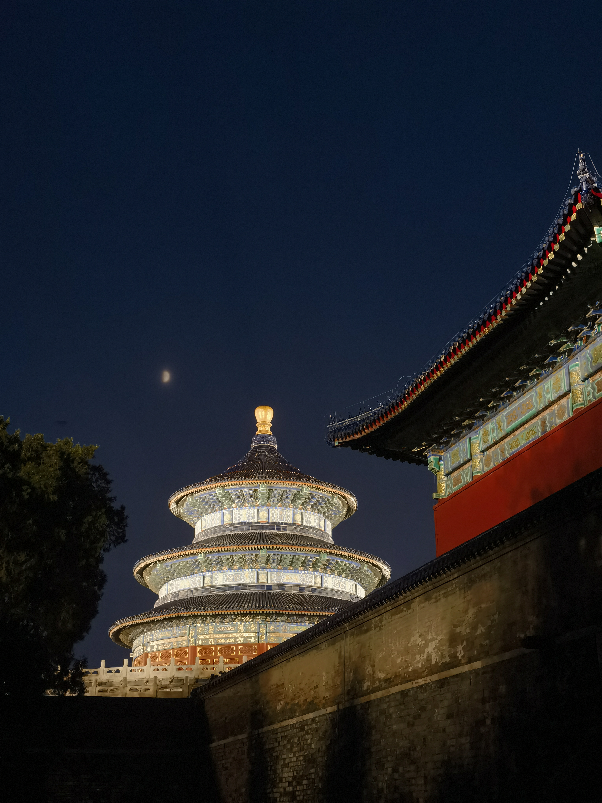

Scenery of Beijing
When I went to Tsinghua University to attend a summer camp, I took the opportunity to visit some of Beijing’s attractions in just a few days. The last time I came to Beijing was when I had just learned how to walk, so I don’t have any lasting memories of this city.
Although didn’t have the opportunity to attend Tsinghua University, it is still a great experience to be led by Tsinghua’s senior schoolmate on a tour of the campus. The whole campus is truly quaint and beautiful. It’s the season of welcoming new students, and the campus is filled with banners of welcome. The atmosphere is full of excitement and anticipation.

The next destination is the ruins of the Old Summer Palace, also known as Yuanmingyuan. Summer is in full swing, with large patches of green leaves in the lotus pond. The evening sun is still bright, creating a vibrant scene. The shadows of trees are cast upon the ruins of the Western-style palaces built of stone.

Since my classes didn’t finish until late afternoon, I can only go sightseeing in the evening. However, there are not many attractions that are open at night. However, what made me happy is that this led to my encounter with the photo below. I think it has a photography magazine-like feel, even though I just took it casually with my phone🥰.

The main building of the Temple of Heaven, the Hall of Prayer for Good Harvest (祈年殿), holds a unique charm at night, and capturing such a scene also requires certain conditions. Due to the closure of the Temple of Heaven Park at 22:00, and the closure of its attractions at 18:00, most of the time, visitors can only view the night scenery from outside the palace’s walls, so This photo was taken from the back of the palace. Moreover, it only lights up on Friday, Saturday, and important holidays in the evening. So, it’s a wonderful coincidence to come across such a splendid view without having planned ahead.